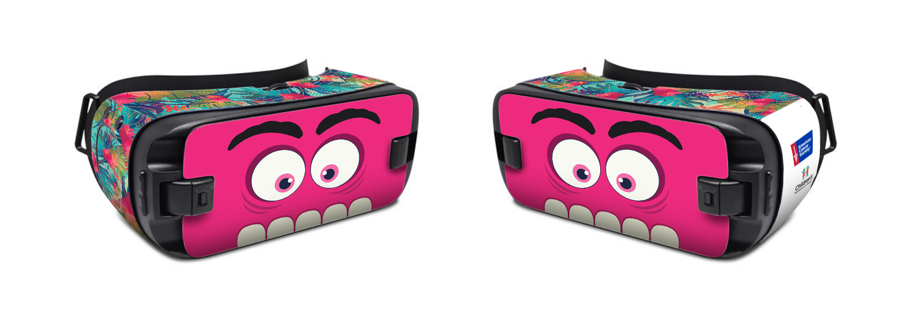
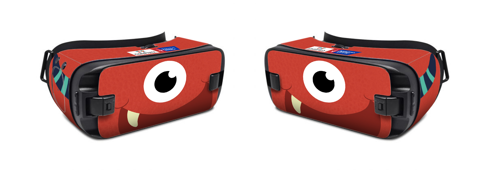
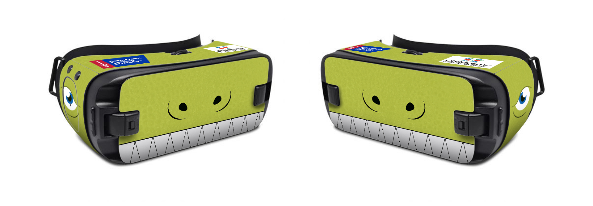
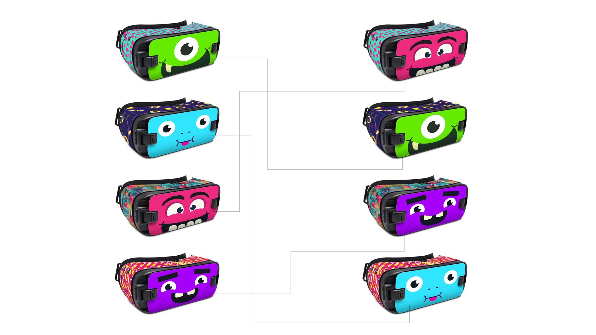

Samsung Gear VR 2 Decals
ACS is implementing a Pediatric VR pilot with Children’s Healthcare of Atlanta to help ease anxieties around the treatment experience. I developed 4 decal designs to cover the Samsung Gear VR Gen 2.
PURPOSE: Provide a save, non-invasive experience that takes kids to a different environment which provides a relaxing, comfortable and pleasant experience during their clinical visits
GOALS:
Reduce patient distress
TESTING
Test virtual reality scenarios with CHOA patients to determine if they enjoyed VR experiences while waiting for procedures, during procedures, or even throughout their hospital stay as an alternative for pain relief
Version 1



Ideation
The age range is for girls and boys ages 6-18. Because of this, I wanted fun designs that were targeted different genders and age range. I also wanted to take advantage of the front plate since ACS is also using these VR Decals for filming purposes.
Goofy faces would ease other kids watching the user, which would create a more relaxed, fun atmosphere.
Final Mockups

We ended up taking the idea of faces and doing a MIX and MATCH of the faces with patterns to create more options and also the kids would have more connection to picking out their pattern and faces.